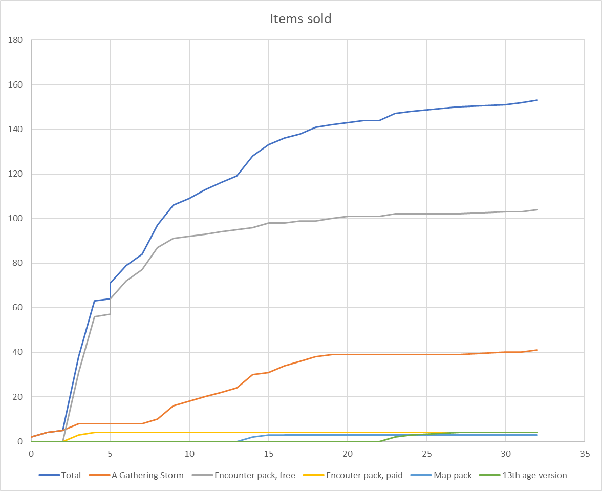
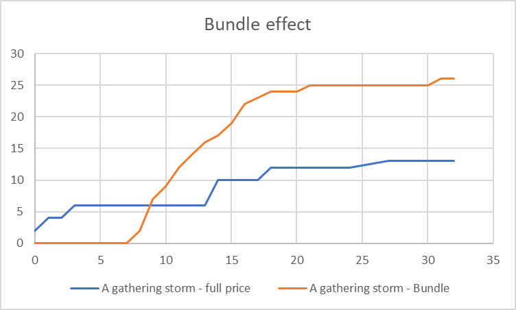
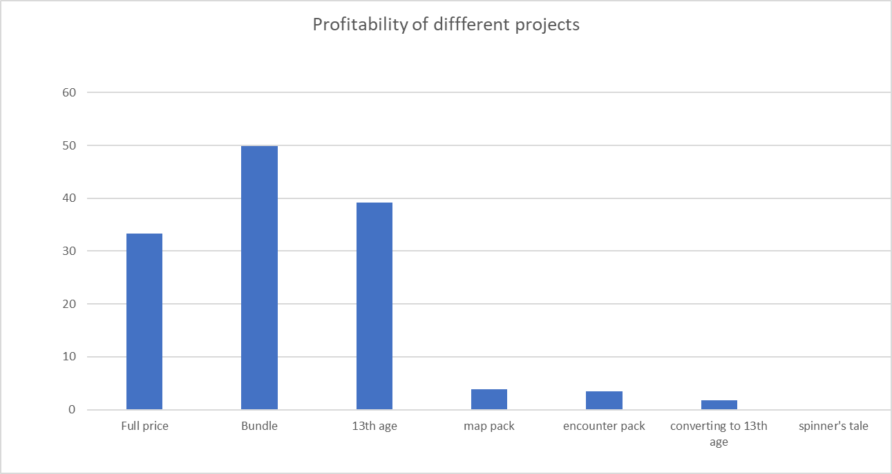

Some Numbers, One Month In
I first released something on DriveThruRpg on August 10. It was supposed to be August 9, but I didn't realize new content creators require manual approval.
One issue I had starting out was I had very little idea of what to expect as a first time creator in this space. Would I make 3 sales? Would I make 100 sales? Some people talk about commissioning art, but that's usually like 70 to several hundred dollars - will I make that much? (No, at least not right way). Was it a terrible idea to release on DriveThruRpg instead of DM's Guild? (No.) How much can I spend on tools, on stock art? Also, what strategies work? What products sell?
Maybe there are resources out there, but I haven't found them. And obviously there are a ton of factors involved. But I feel like having any data at all would have been helpful a month ago. As they says, "the plural of anecdote is data" (I know the Internet likes to say "the plural of anecdote is not data" but they're wrong about the quote and everything really.)
Summary
So far I've made about $131 across two platforms and 5 products, most of which are spinoffs of one adventure from the RGP writer's workshop. I also wrote another standalone adventure which is, I guess, experimental, and has had 0 sales.
My expenses were: $29 for the course, $29.99 for Wonderdraft, $13.50 for spot art, $6 for maps (which I since have replaced with ones I made myself) and $19.99 for Dungeondraft, totalling $98.48. You don't actually need all these things - I personally would recommend picking up some spot art and some maps, I think the RPG Writer's workshop is definitely worth it, and I'd only get Wonderdraft or Dungeondraft if that interests you. I have since picked up the RPG Writer's Workshop marketing course ($19.99) and am eyeing buying an art program to start playing around with, which would push me over what I've made so far but not beyond what I think I could make eventually.
I am not including as an expense the additional RPG content I have been inspired to buy as a result of all of this, which has been a lot.
So, if you're starting out, I think breaking even and making this a self-sustaining hobby is a reasonble goal if you keep your costs low. It is also probably the least efficient way I can think of to convert my time into money.
If, like me, you mostly want validation from the Internet and don't need the money, I'd recommend charging anyway. The validation feels more real when someone is paying even a dollar, and you're undercutting people who rely on this and devaluing the work if you aren't. So far all of the money has recircled into the general ecosystem of the industry, and then some, if you count the fact that I'm now buying a lot more from small creators.
Data
All of the following charts are DriveThruRpg only, except for the last one, mostly because merging the spreadsheets was annoying and there wasn't as much data to analyze from Itch.
The PWYW encounter pack had the most downloads, followed by the (paid) adventure, with paid versions of other spin-off content maxing out at about 4 purchases each. Generally everything made a few sales immediately after being released. The encounter made most of its sales while the bundle was being advertised, and had a small trickle of sales over time otherwise, which doesn't seem to be related to anything, including when I released other content. Obviously, there has been no time to see how the long tail of sales behaves.
The bundle increased sales by about 200%, mostly while the bundle was being advertised.
Most money came from the DriveThruRpg bundle, followed by the 13th age conversion (!!!), mostly on Itch, followed by the full price adventure on DriveThruRpg, which nobody has bought on Itch. A few dollars came from other products.
Other takeaways
1. I regret putting up PWYW content on DriveThruRpg. It did not seem to drive any traffic to my paid products, and made about the same as equivalent content that you had to pay for. I also got a three star, no text review as a result, and anecdotally there are people who go around rating PWYW stuff poorly. I also realized afterwards that I'm not sure people even actually read it, so you don't even get that validation. I haven't put up community copies on itch.io yet, but that seems like a much better model. Anecdotally, I have heard that DM's Guild is somehow even worse than DriveThruRpg for PWYW.
2. Making 13th age content worked out surprisingly well, especially if you also post on itch (that's where most of the money came from). It's a small community, but there's less competition and people are perhaps maybe more willing to pay for stuff to keep the community going.
3. Maps might dominate the front page of drivethrurpg, but I think the market is a bit oversaturated. However, I'm going to want to keep making maps anyway, so I'll keep experimenting there. I might just need a wider variety of maps for that aspect to take off. From a purely financial perspective buying Dungeondraft has yet to pay for itself but it's something I enjoy using. Because I let people use maps in their adventures, I'm hoping to make a couple themed packs by November and then maybe people will be interested.
4. The RPG Writer's Workshop bundle worked out really well and more than paid for the price of the course. I definitely hope to make bundles with other new creators in the future. This makes a lot of sense to me: people will probably be a lot more willing to take a chance on a few different unknown people than on just one.
6.Itch is worthwhile for non-D&D content, but you're going to have to make more of an effort to drive eyeballs there. Everything I've posted on DriveThruRpg has had at least 1 sale, which is not true of Itch. However, if you get people's attention, people are sometimes going to pay more than the asking price on Itch. I also get the impression things tend to be priced higher on Itch and people are willing to pay more. So it basically seems to be a higher risk but maybe higher reward platform. But again, limited data points.
5. My game for the fantasy realism jam for charity has received 0 sales, which in retrospect shouldn't have been a surprise. I've actually really enjoyed the concept of the fantasy realism jam but the joke is that most people don't. Oh well, I had a lot of fun with it.
6. I put up my guide to converting 5e to 13th age content as PWYW, not really expecting anyone to pay anything, but some people did, which is appreciated.
More general thoughts
One of the best things about this whole endeavor has been feeling like I'm a part of a small community of people with similar interests making content. It's been very exciting and motivating to see what other people are doing as well. The Writer's Workshop discord has been great, and even Twitter has been great too, especially if you focus more on interacting with other small creators and hobbyists.
The whole thing can be kind of an emotional rollercoaster. You can tell yourself that you're just doing this for fun and you don't care if anyone buys it or not, but you'll have bursts of sales followed by long droughts of wondering if you're just done now. I get the impression, from what I heard from other people, that it was slower to get going on DriveThruRpg as compared to DM's Guild, but that when the bundle came out things picked up.
I haven't tried to quantify this, but I suspect a small factor in these numbers is that I spend a lot of time on Twitter - however, bursts of twitter followers or engagement didn't seem to correspond to sales, so it's really hard to say.
I also got the impression that people who started out with an audience of even just a few hundred people on twitter would see much better results than you at first. A few hundred doesn't seem like much, but in such a small industry those numbers matter.
I'm pretty sure a large part of why my 13th age content did better than expected is that there are a small number of people who very actively evangelize 13th age content.
Written Sept 12 2020